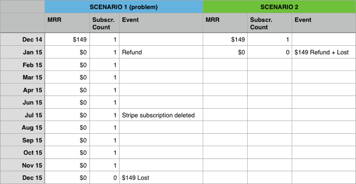
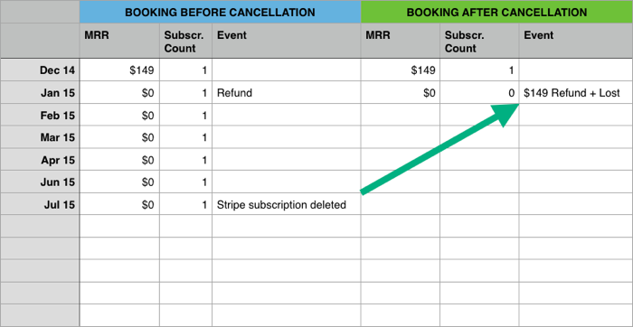

MRR Calculation Principles for Annual Subscription Refunds
We're publishing a time-integrity fix at Dec 2015. This article explains how it changes refund calculations
To provide accurate data FirstOfficer uses double-entry bookings, automatic cross-checking and error-recovery. Most importantly, we follow strict accounting rules.
One of the most important rules is time-integrity:
What does this mean?
Let's imagine that you'd cancel today and switch to a competitor analytics product. When you'd come back three months later and have FirstOfficer re-import your data and calculate metrics again, your old numbers would be the same than they were before you left.
Calculations must not depend on transient factors like Stripe hook events, which may not be available every time the same calculation is made.
How did FirstOfficer break this rule?
Until Dec 2015, FirstOfficer booked refunded losses based on whether or not the subscription was still active in Stripe.
Subscription existence in Stripe is transient information.
Example:
Customer bought an annual subscription at Dec 2014. In January 2015 they were refunded, but the Stripe subscription in was not cancelled. Instead, the subscription was cancelled 5 months later in July.
When was this customer lost and with what MRR?
Below is how FirstOfficer would have booked this in 2 scenarios:
-
You were using FirstOfficer BEFORE the refund/cancellation in this example happened
-
You started using FirstOfficer AFTER and metrics were reconstructed from old Stripe data

The loss got booked to a different month so the churn varied based on when the numbers were calculated. Also the ARPU varied, as any active $0 MRR customers lower it.
Why wasn't this customer lost in July?
It's financial analytics so we book by the financial events - invoices, refunds, etc. When possible, customer is marked as lost when revenue ceases.
The customer events like cancellations are important too, but that's the business of behavioural analytics.
How will FirstOfficer book this after the fix?
FirstOfficer will now check for the subscription existence each month and when it detects that a refunded subscription has been cancelled, it books the loss using the AFTER scenario.

We will also look up for any past incidences and fix them.
How will this affect my numbers?
The fix will move the losses due to refunds from the month when subscription was cancelled to the month when the refund was given or the next payment failed.
So it'll shuffle your churn numbers a bit. If you had a significant amount of annual subscription refunds, it may also affect your ARPU.
It will only affect the entries booked after you started using FirstOfficer, your historical numbers have been booked like this already.